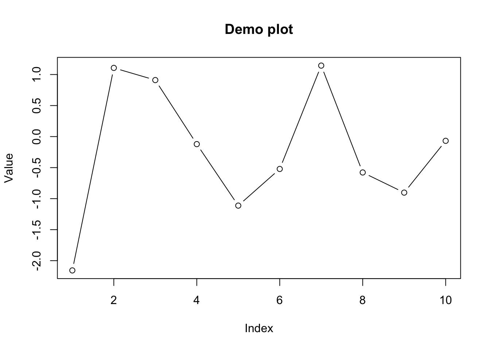
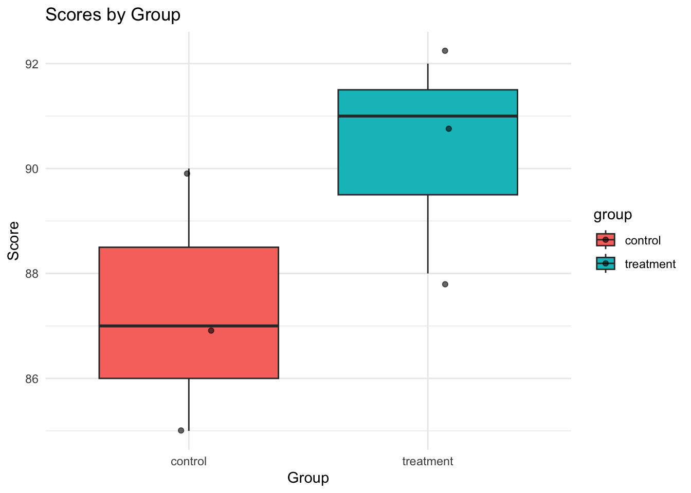

R.version.string[1] "R version 4.4.3 (2025-02-28)"# If running inside RStudio, this may show RStudio version:
if (exists("RStudio.Version")) {
try({
v <- RStudio.Version()
paste("RStudio version:", v$version)
}, silent = TRUE)
}Introduction
Steps
Check versions
R.version.string[1] "R version 4.4.3 (2025-02-28)"# If running inside RStudio, this may show RStudio version:
if (exists("RStudio.Version")) {
try({
v <- RStudio.Version()
paste("RStudio version:", v$version)
}, silent = TRUE)
}Example: Base R functionality (works the same in RStudio since RStudio calls R under the hood)
# Base R calculations
x <- c(1, 2, 3, 4, 5)
mean(x)[1] 3sd(x)[1] 1.581139sum(x^2)[1] 55
Quick demonstrations
# Create a few objects (watch the Environment pane update)
nums <- rnorm(10)
df <- data.frame(id = 1:5, value = c(10, 20, 15, 30, NA))
# Use Help pane: open documentation
help("mean") # or ?mean
# Show a basic plot (appears in Plots tab)
plot(nums, type = "b", main = "Demo plot", xlab = "Index", ylab = "Value")
Good practices for CSV/TSV flat files
Create and save a well-formatted CSV
# Example tidy dataset
tidy_example <- data.frame(
subject_id = 1:6,
group = c("control", "control", "control", "treatment", "treatment", "treatment"),
age_years = c(34, 45, 51, 29, 40, NA),
visit_date = as.Date(c("2025-01-10", "2025-01-12", "2025-01-13", "2025-01-11", "2025-01-12", "2025-01-14")),
score = c(87, 90, 85, 92, 88, 91)
)
# Create a data folder, then save CSV
dir.create("data", showWarnings = FALSE)
csv_path <- file.path("data", "tidy_example.csv")
write.csv(tidy_example, csv_path, row.names = FALSE, na = "")
csv_path[1] "data/tidy_example.csv"Load the CSV using base R
loaded_base <- read.csv(csv_path, stringsAsFactors = FALSE)
str(loaded_base)'data.frame': 6 obs. of 5 variables:
$ subject_id: int 1 2 3 4 5 6
$ group : chr "control" "control" "control" "treatment" ...
$ age_years : int 34 45 51 29 40 NA
$ visit_date: chr "2025-01-10" "2025-01-12" "2025-01-13" "2025-01-11" ...
$ score : int 87 90 85 92 88 91head(loaded_base)Load the CSV using readr (tidyverse) for better performance and type control
# Install readr if needed (run once; eval is FALSE so it won't execute automatically)
# install.packages("readr")# If readr is available, demonstrate its use safely
if (requireNamespace("readr", quietly = TRUE)) {
loaded_readr <- readr::read_csv(csv_path, show_col_types = FALSE)
print(loaded_readr)
}# A tibble: 6 × 5
subject_id group age_years visit_date score
<dbl> <chr> <dbl> <date> <dbl>
1 1 control 34 2025-01-10 87
2 2 control 45 2025-01-12 90
3 3 control 51 2025-01-13 85
4 4 treatment 29 2025-01-11 92
5 5 treatment 40 2025-01-12 88
6 6 treatment NA 2025-01-14 91Handling column types and missing values explicitly with readr
if (requireNamespace("readr", quietly = TRUE)) {
loaded_typed <- readr::read_csv(
csv_path,
col_types = readr::cols(
subject_id = readr::col_integer(),
group = readr::col_factor(levels = c("control", "treatment")),
age_years = readr::col_double(),
visit_date = readr::col_date(),
score = readr::col_double()
),
show_col_types = FALSE
)
str(loaded_typed)
}spc_tbl_ [6 × 5] (S3: spec_tbl_df/tbl_df/tbl/data.frame)
$ subject_id: int [1:6] 1 2 3 4 5 6
$ group : Factor w/ 2 levels "control","treatment": 1 1 1 2 2 2
$ age_years : num [1:6] 34 45 51 29 40 NA
$ visit_date: Date[1:6], format: "2025-01-10" "2025-01-12" ...
$ score : num [1:6] 87 90 85 92 88 91
- attr(*, "spec")=
.. cols(
.. subject_id = col_integer(),
.. group = col_factor(levels = c("control", "treatment"), ordered = FALSE, include_na = FALSE),
.. age_years = col_double(),
.. visit_date = col_date(format = ""),
.. score = col_double()
.. )
- attr(*, "problems")=<externalptr> Reading Excel files
# install.packages("readxl") # run once
if (requireNamespace("readxl", quietly = TRUE)) {
# Example: readxl::read_excel("data/example.xlsx", sheet = 1)
# (We won’t read here unless a file exists)
}NULLOther dataset resources
Install packages (run once; do not run inside production pipelines without a lockfile)
# Example install (set eval: false to avoid automatic install)
# install.packages(c("tidyverse", "readr", "dplyr", "ggplot2", "readxl", "data.table"))Load packages
# Load if available; fall back gracefully if not
loaded_pkgs <- c()
for (pkg in c("dplyr", "ggplot2")) {
if (requireNamespace(pkg, quietly = TRUE)) {
library(pkg, character.only = TRUE)
loaded_pkgs <- c(loaded_pkgs, pkg)
}
}
loaded_pkgs[1] "dplyr" "ggplot2"Notes
Basic objects
# Numeric and character vectors
a <- c(10, 20, 30)
b <- c("alpha", "beta", "gamma")
# Factors
grp <- factor(c("control", "treatment", "control"), levels = c("control", "treatment"))
# Matrices
m <- matrix(1:9, nrow = 3)
# Lists (heterogeneous containers)
my_list <- list(nums = a, labels = b, flag = TRUE)
# Data frames (tabular)
df2 <- data.frame(id = 1:3, group = grp, score = c(88, 92, 85))
str(df2)'data.frame': 3 obs. of 3 variables:
$ id : int 1 2 3
$ group: Factor w/ 2 levels "control","treatment": 1 2 1
$ score: num 88 92 85# Functions
add_two <- function(x) x + 2
add_two(5)[1] 7Descriptive statistics (base R)
x <- rnorm(100, mean = 50, sd = 10)
summary(x) Min. 1st Qu. Median Mean 3rd Qu. Max.
28.74 42.48 50.44 50.08 56.69 78.22 mean(x); median(x); sd(x); quantile(x, probs = c(0.25, 0.5, 0.75))[1] 50.08095[1] 50.44214[1] 10.04565 25% 50% 75%
42.47698 50.44214 56.69270 Group-wise summaries (dplyr, if available)
if (requireNamespace("dplyr", quietly = TRUE)) {
library(dplyr)
loaded_base %>%
group_by(group) %>%
summarise(
n = n(),
mean_score = mean(score, na.rm = TRUE),
mean_age = mean(age_years, na.rm = TRUE)
)
}Visualization (ggplot2, if available)
if (requireNamespace("ggplot2", quietly = TRUE)) {
library(ggplot2)
ggplot(loaded_base, aes(x = group, y = score, fill = group)) +
geom_boxplot() +
geom_jitter(width = 0.1, alpha = 0.6) +
labs(title = "Scores by Group", x = "Group", y = "Score") +
theme_minimal()
}
Linear regression
# Fit a simple model on built-in mtcars dataset
fit <- lm(mpg ~ wt + cyl, data = mtcars)
summary(fit)
Call:
lm(formula = mpg ~ wt + cyl, data = mtcars)
Residuals:
Min 1Q Median 3Q Max
-4.2893 -1.5512 -0.4684 1.5743 6.1004
Coefficients:
Estimate Std. Error t value Pr(>|t|)
(Intercept) 39.6863 1.7150 23.141 < 2e-16 ***
wt -3.1910 0.7569 -4.216 0.000222 ***
cyl -1.5078 0.4147 -3.636 0.001064 **
---
Signif. codes: 0 '***' 0.001 '**' 0.01 '*' 0.05 '.' 0.1 ' ' 1
Residual standard error: 2.568 on 29 degrees of freedom
Multiple R-squared: 0.8302, Adjusted R-squared: 0.8185
F-statistic: 70.91 on 2 and 29 DF, p-value: 6.809e-12T-test (group comparison)
# Compare mpg for automatic vs manual transmissions
t.test(mpg ~ am, data = mtcars)
Welch Two Sample t-test
data: mpg by am
t = -3.7671, df = 18.332, p-value = 0.001374
alternative hypothesis: true difference in means between group 0 and group 1 is not equal to 0
95 percent confidence interval:
-11.280194 -3.209684
sample estimates:
mean in group 0 mean in group 1
17.14737 24.39231 Contingency table and chi-squared test
tbl <- table(mtcars$cyl, mtcars$gear)
tbl
3 4 5
4 1 8 2
6 2 4 1
8 12 0 2chisq.test(tbl)
Pearson's Chi-squared test
data: tbl
X-squared = 18.036, df = 4, p-value = 0.001214Save to CSV (portable)
# Save mtcars as CSV
out_csv <- file.path("data", "mtcars_export.csv")
dir.create("data", showWarnings = FALSE)
write.csv(mtcars, out_csv, row.names = FALSE)
out_csv[1] "data/mtcars_export.csv"Save to RDS (preserves R types precisely, single object)
out_rds <- file.path("data", "mtcars.rds")
saveRDS(mtcars, out_rds)
# Load back
mtcars_loaded <- readRDS(out_rds)
identical(mtcars, mtcars_loaded)[1] TRUESave multiple objects to .RData (workspace-like)
out_rdata <- file.path("data", "analysis_objects.RData")
obj1 <- 123
obj2 <- data.frame(x = 1:3, y = c("a", "b", "c"))
save(obj1, obj2, file = out_rdata)
# Load back
rm(obj1, obj2)
load(out_rdata)
obj1; obj2[1] 123Saving files
Rendering (turn .qmd or .Rmd into HTML/PDF/Word)
# Quarto render (requires Quarto installed)
# install.packages("quarto") is not needed; Quarto is a separate tool you install from https://quarto.org/
# From R you can call:
if (requireNamespace("quarto", quietly = TRUE)) {
# quarto::quarto_render("your_document.qmd")
}NULL# R Markdown render (requires rmarkdown package)
# install.packages("rmarkdown") # run once
if (requireNamespace("rmarkdown", quietly = TRUE)) {
# rmarkdown::render("your_document.Rmd", output_format = "html_document")
}NULLCommand-line rendering (outside R)
Export formats